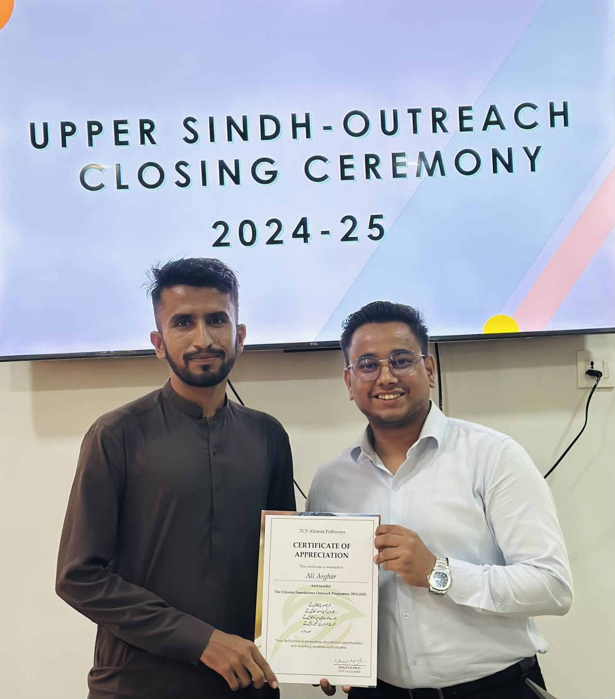

About Me
Hello! I am Ali Asghar, a passionate Web Developer who enjoys creating clean, responsive, and user-friendly websites. I have experience working with HTML, CSS, JavaScript, Java, and Python, and I love building projects that solve real-world problems. I am also a proud TCF Ambassador, actively promoting education in my community and planning to open a TCF school in my village to help children access free education. Along with my development skills, I have experience teaching Math, which has strengthened my communication and mentoring abilities. I am always eager to learn new technologies and take on challenges that help me grow as a developer and as a contributor to society.
Contact me
I am a proud TCF Alumni, Volunteer, and Ambassador. Through the TCF Social Internship Programme, I gained hands-on experience working on developmental initiatives across Karachi, Lahore, and Islamabad. This internship gave me grass-root level exposure to the challenges faced by underprivileged communities in Pakistan and helped me develop a more empathetic and comprehensive understanding of society. Being part of TCF has strengthened my commitment to promoting education and giving back to my community
TCF volunteer-programmes